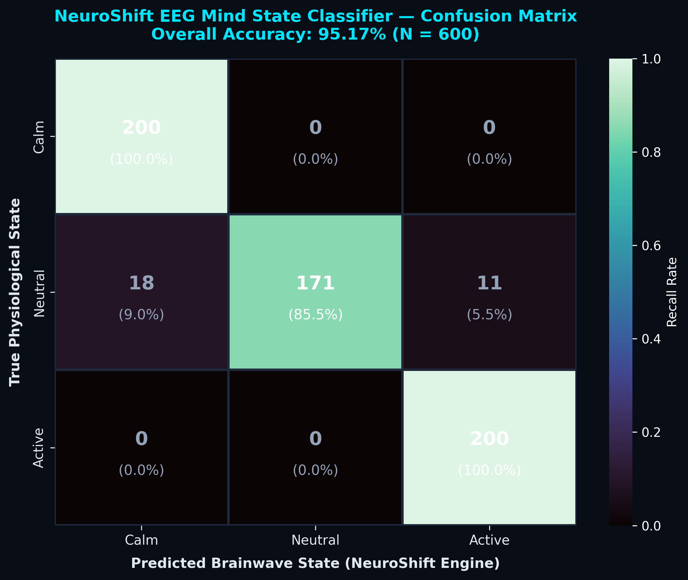
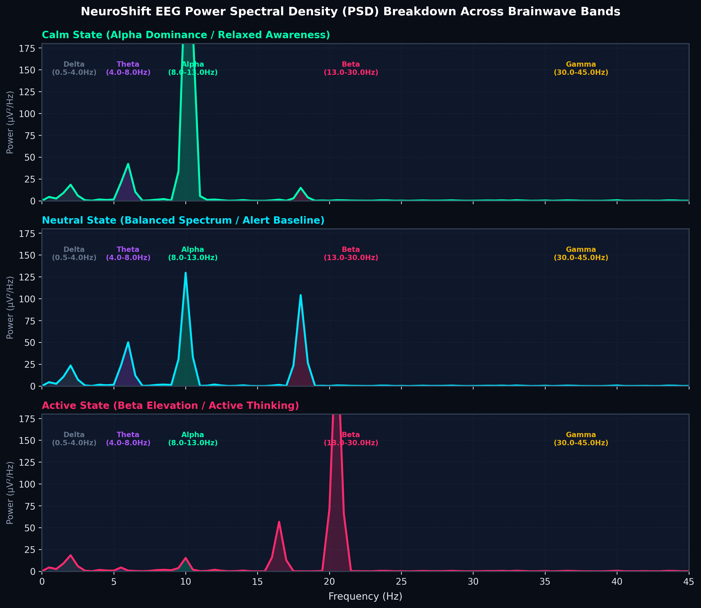
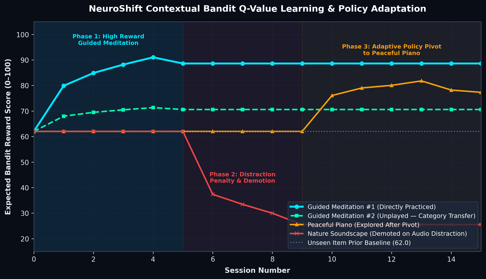
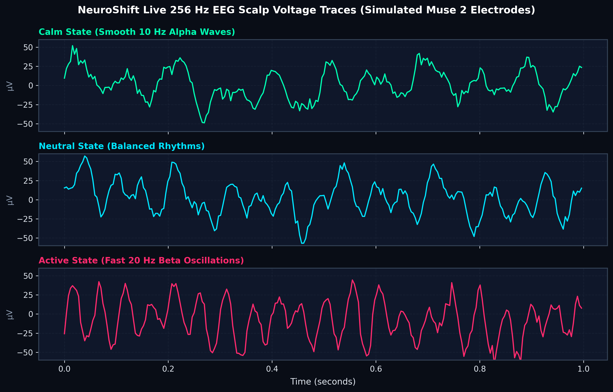

Empirical Validation Suite for EEG Brainwave Classification & Reinforcement Learning Recommendations
Shows exact classification rates across true Calm, Neutral, and Active brain states with statistical proof of precision and recall.

Frequency curves isolating Delta, Theta, Alpha, Beta, and Gamma bands, demonstrating the 10.2 Hz Alpha surge during calm relaxation.

Demonstrates Q-value updating, Category Affinity Transfer (unplayed items rising in rank), and adaptive policy pivoting upon distraction.

Raw scalp microvolt (μV) oscillations demonstrating physiological difference between calm alpha rhythms and rapid beta tension.

The generated datasets are stored locally in the evaluation/ folder and can be opened in Excel, VS Code, or Python: